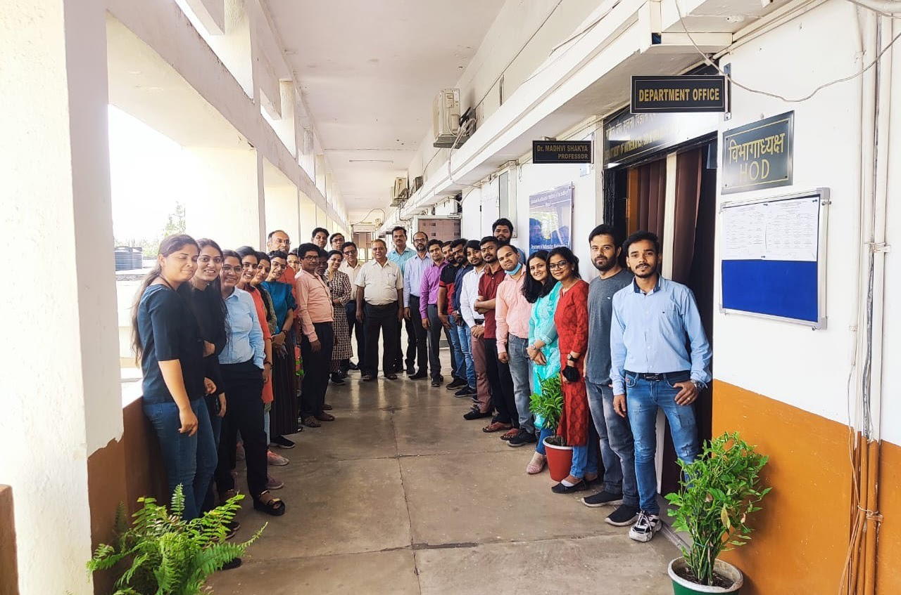

Department of Mathematics, Bioinformatics & Computer Applications
The Department of Mathematics, Bioinformatics & Computer Applications (MBC) at MANIT Bhopal is a dynamic academic centre committed to pushing the boundaries of knowledge in mathematical sciences, computing technologies, and their wide-ranging interdisciplinary applications.
The department fosters an environment of rigorous intellectual inquiry, high-impact research, and industry-aligned academic curriculum that equips students to become versatile problem-solvers and innovators.
